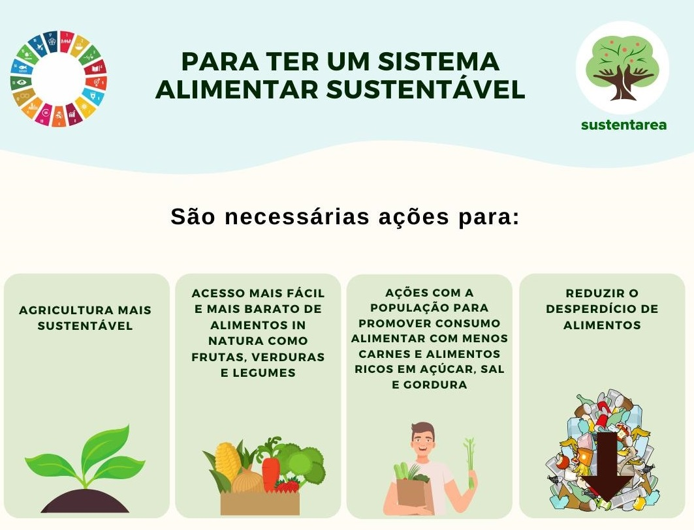

Alimentação Sustentável
Definição e Importância
A alimentação sustentável busca equilibrar nutrição, saúde e preservação ambiental. Valoriza
alimentos locais, sazonais e orgânicos, reduz o desperdício e minimiza o consumo de produtos de
origem animal.
Benefícios Ambientais e Sociais
- Redução da Pegada de Carbono: Produtos locais e sazonais geram menos emissões pelo
transporte.
- Saúde e Nutrição: Incentiva alimentos naturais, frescos e menos ultraprocessados.
- Economia Local: Fortalece agricultores familiares e o comércio regional.
- Redução do Desperdício: Planejamento de refeições e aproveitamento integral de
alimentos.
Dados no Brasil
- Cerca de 41 mil toneladas de alimentos são desperdiçadas anualmente.
- Crescimento de feiras orgânicas e produtos agroecológicos em cidades como São Paulo, Curitiba e Porto
Alegre.
Desafios
O principal desafio é o custo mais alto de alimentos orgânicos e a baixa conscientização do
consumidor. Programas de educação alimentar e políticas de incentivo à agricultura sustentável
podem ampliar o acesso e consumo.

Referências